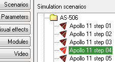
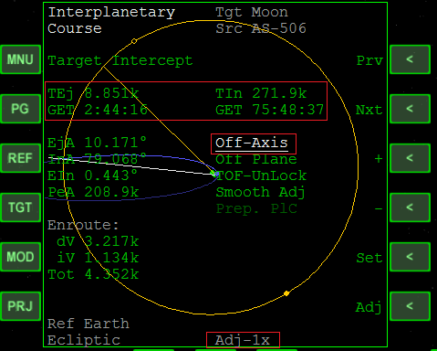
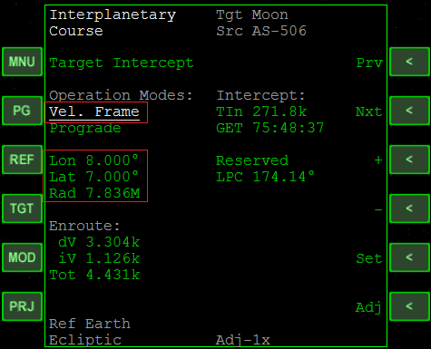
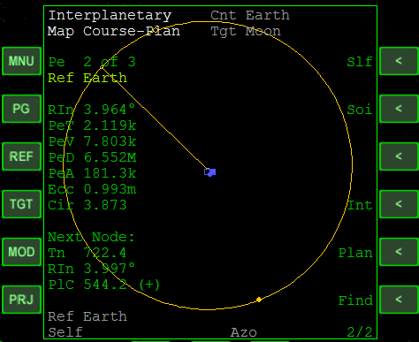
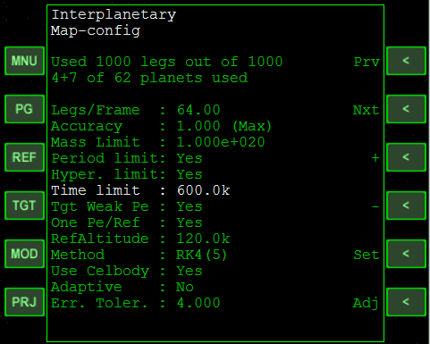
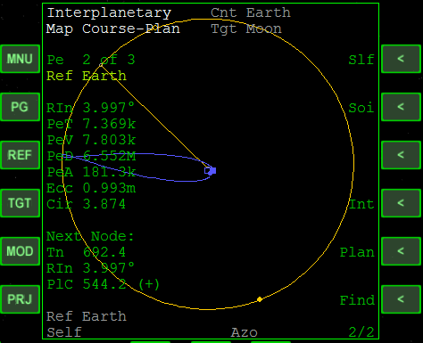
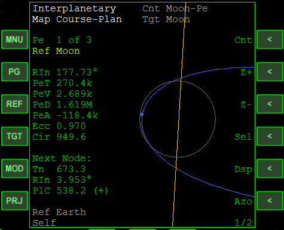

IMFD Offset機能と自由帰還軌道 (AMSO)
AMSOのアポロミッションのために、IMFDを使って自由帰還軌道を作成します。
準備
今回使用するシナリオは、これら2つのいずれかを選んでください。
- Apollo 11 step 01（地上から打ち上げる場合）
- Apollo 11 step 04（軌道投入が終わった時点）

打ち上げから軌道投入までは自動で実行されます。
AMSO キー操作一覧
Target Interceptを開く
軌道に乗ったら、左MFDでIMFDを開く。
MNU→Course→Target Interceptを選択。
TGTをクリックしてMoonと入力。
TEj・TInを入力する
まず、TEjとTInのGETを以下の数字にする。
Adjをクリックして倍率を変更すると、時・分・秒のどれを操作するか選択できる。
重要：TEj・TInの数字を直接操作しないで、その下のGETだけを操作する。
| TEjのGET | 2:44:16 |
| TInのGET | 75:48:37 |
Nxtを何度かクリックしてRealtimeを選択。
+をクリックしてOff-Axisにする。

Offsetを有効にする
MODをクリック。
Prvを何度かクリックして、Offset Disabledを選択。
+を何度かクリックして、Vel. Frameに切り替える。
これで、IMFDのOffset機能が有効になる。
Nxtを何度かクリックして、Lon・Lat・Radを選択。
Setをクリックして以下の数字を入力する。
| Lon | 8.000° |
| Lat | 7.000° |
| Rad | 7.836M |
MODを何度かクリックして元の画面に戻る。

ABをクリックすると、エンジン噴射のカウントダウンが開始する。
Map Programを開く
この作業をしなくても、TLIを実行することはできます。
お使いのPCのスペックによっては、動作が重くなる場合があるかもしれません。
データを共有する
右MFDでもIMFDを開く。
左MFDのデータを共有させる。
Program MenuでPGをクリックして0と入力。
ターゲットを指定する
Mapをクリック。
TGTをクリックしてMoonと入力。
PRJをクリックしてSelfにする。
プランを表示する
PGをクリックして2ページ目に移動する。
Planをクリックして、左MFDで作成したプランを表示する。

MODを何度かクリックして、Map-configを表示する。
Time limitを選択して、600kと入力する。

MODをクリックして元の画面に戻る。
月の近くを通って地球に戻る、自由帰還軌道になっているのがわかる。

Cntをクリックしてp-moonと入力すると、近月点が中心になる。

解説
IMFDのTarget Interceptを使用すると、通常は惑星の中心を直撃するような軌道を作成します。
（惑星を点として考えることで、2点間の最適な軌道を設計する）
Offset機能を使うと、天体の周囲のある1点を目標として、そこへ向かう軌道を作成することができます。
例えば、月を直撃するのではなく、月の近くを通る軌道を指定することで、自由帰還軌道も作成できます。
Lon（経度）・Lat（緯度）のふたつは、天体の公転面が基準となっています。
惑星の進行方向が経度0°、その反対が180°です。
Rad（動径）は、惑星の中心からの距離を指しています。
ただし、Target Interceptは誤差が大きいため、Map programで実際の軌道を確認して調整する必要があります。
IMFDに付属しているManual53.pdfの最後に、AMSOで使えるTLIのデータが記載されているので参考にしてください。※
※データ自体が古いので、現行バージョンでは若干の誤差があります
自由帰還軌道のイメージがつかめない場合は、以下の記事も参考にしてください。
TransX 地球―月の自由帰還軌道を作る